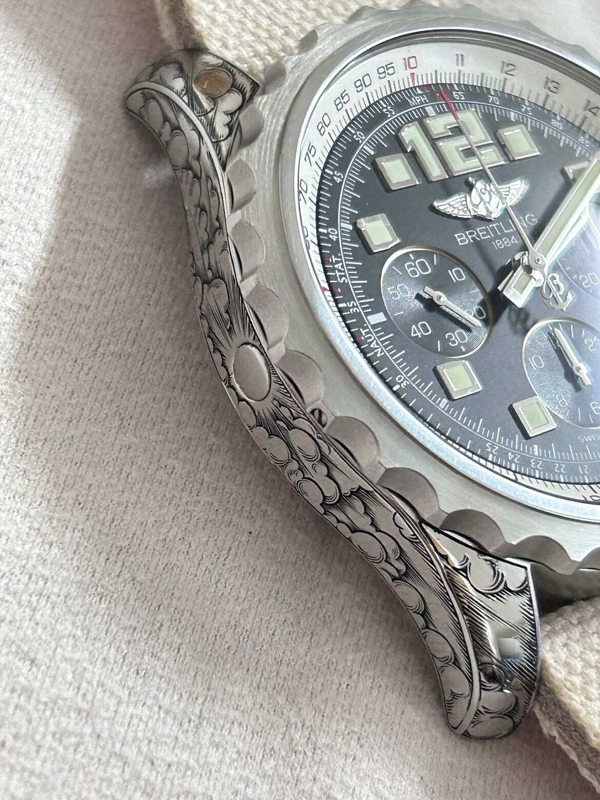
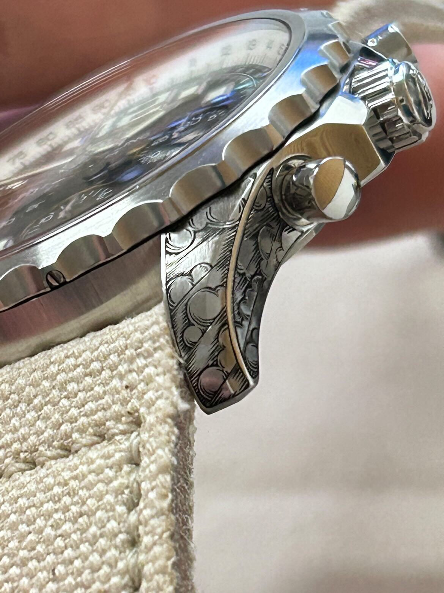
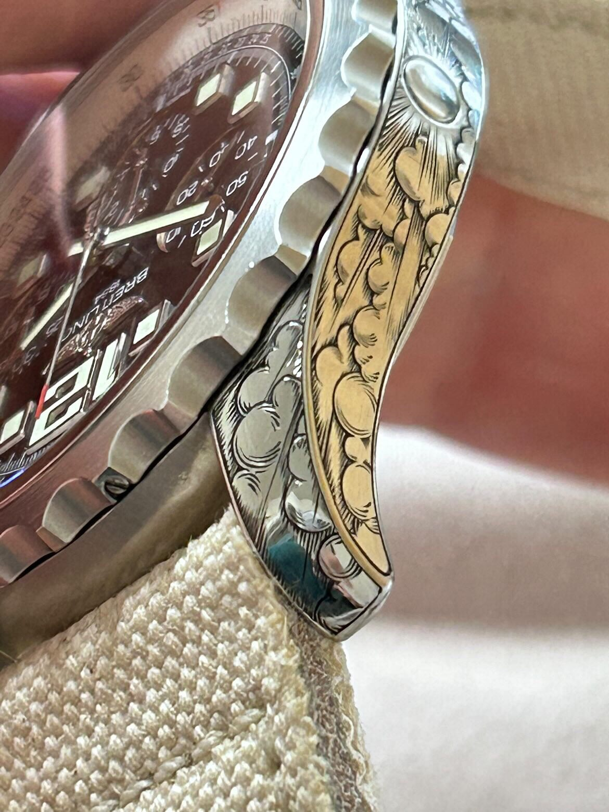
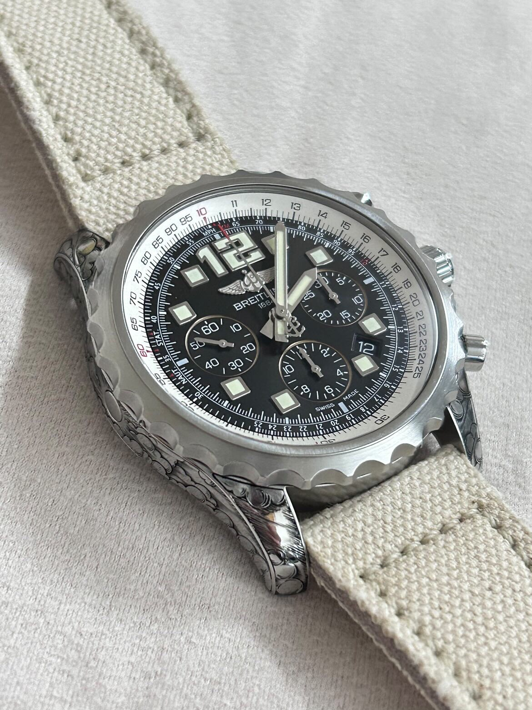

精選作品・10
Breitling Cloud

作品構想
雲朵紋飾在 Breitling 經典線條上流動融合。
Breitling Cloud 以雲形紋飾銜接錶殼與錶帶，保留腕錶厚實輪廓，同時提升表面細節的雕刻層次。精準手工刻面讓紋飾在整體構圖中呈現節奏與深度。




作品資料
- 腕錶
- Breitling Cloud
- 技法
- 傳統手工雕刻
- 構圖
- 雲朵紋飾橫跨錶殼與錶帶
- 工作室
- Mr. Nine Engraving・台灣